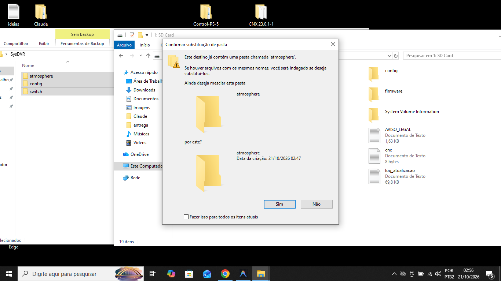
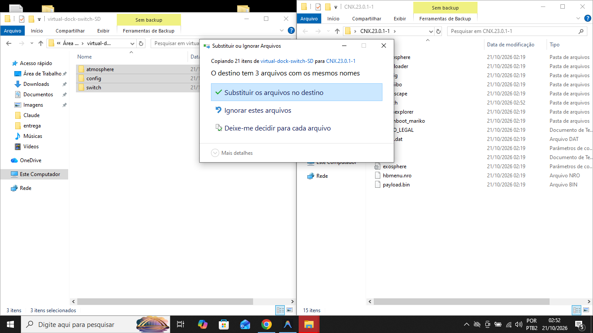

Jogue na TV, sem fio, com o Switch na mão.
O Virtual Dock recebe a imagem do seu Switch pela rede Wi-Fi e mostra na TV Android. Você joga na mão e vê tudo na TV, sem cabo e sem app extra no console.
Funciona em Android TV, Google TV, Fire TV Stick e TV Box.
O que o Virtual Dock faz
Tudo é configurado no próprio Switch e na TV. Você não precisa editar arquivos.
Jogar na mão
O Switch transmite pelo Wi-Fi em 720p. Você joga na mão e a imagem aparece na TV.
Pareamento sem câmera
A TV encontra o Switch sozinha na mesma rede. Se preferir, digite o IP que aparece no console.
Teste de rede
Antes de jogar, o app mede o Wi-Fi e diz se a conexão está boa para transmitir.
Perfis por jogo
Você escolhe a prioridade para cada jogo. Os ajustes ficam salvos.
Apagar a tela
A tela do Switch pode ficar apagada durante a transmissão, para economizar bateria.
Overlay dentro do jogo
Com o Tesla instalado, você liga ou desliga a transmissão sem sair do jogo.
Como fica na TV
Captura real do app na Android TV.

Como instalar
São três partes: preparar o Switch, instalar o app na TV e jogar.
No Switch (cartão SD)
- Baixe o SysDVR.zip da versão 6.3. Não use o "SysDVR-USB-Only.zip".
- Descompacte o SysDVR na pasta principal do cartão SD (a pasta que abre quando você entra no cartão). Ela cria as pastas
atmosphere,configeswitch. - Baixe o Virtual-Dock-Switch.zip. Ele fica na pasta Downloads do seu computador. Clique com o botão direito, escolha Extrair tudo e copie as pastas
atmosphereeswitchpara a pasta principal do cartão SD, mesclando com as que já existem.
Clique em Sim. - Se aparecer a janela Substituir ou Ignorar Arquivos, escolha Ignorar estes arquivos. Não escolha Substituir.

Clique em Ignorar estes arquivos. - Reinicie o Switch. O SysDVR leva uns 20 segundos para começar depois de ligar.
Na TV
- Baixe o Virtual-Dock-TV.apk. Ele fica na pasta Downloads do seu computador. Copie para um pendrive e conecte na TV, ou envie pelo app Send Files to TV.
- Na TV, libere a instalação de apps desconhecidos para o gerenciador de arquivos: Configurações → Privacidade de dispositivo (ou Segurança) → Apps desconhecidos.
- Abra o APK com um gerenciador de arquivos (por exemplo, X-plore ou File Commander) e instale.
- O app aparece na tela inicial como Virtual Dock. No Fire TV Stick, use o app Downloader para abrir o link do APK.
Parear e jogar
- Abra o Virtual Dock no Switch. A tela principal do app mostra Modo Sem Fio · 720p e o endereço para a TV.
- Abra o Virtual Dock na TV. Se o Switch aparecer sozinho, aperte Jogar agora.
- Se não aparecer, escolha Digitar o IP e use o endereço que aparece na tela do Switch (exemplo:
192.168.0.20 : 9911). - Para abrir o app no Switch durante um jogo, segure R ao abrir o jogo e escolha Virtual Dock.
- Na tela principal do app, aperte A para pausar ou voltar a transmissão.
Antes de instalar
O que você precisa
- Switch com Atmosphère (desbloqueado) e cartão SD. Funciona no Switch Lite também.
- SysDVR 6.x instalado no Switch.
- TV Android TV, Google TV, Fire TV Stick ou TV Box, na mesma rede Wi-Fi do Switch.
Limites
- A imagem é 720p, com atraso de 80 a 150 ms.
- Alguns jogos bloqueiam a captura de imagem.